Вобленко Глеб Владимирович · группа 11/1-РПО-26/1
tz-20-klining-chistyy-list.vercel.app · GA4 G-TCNW88BN83
1Запросы приходят в Instagram, ВКонтакте, Telegram и по телефону. Компания не знает, какой канал приводит клиентов на регулярную уборку, хотя они дают основную выручку.
Источник: письмо генерального директора, ТЗ стр. 1.
ЧИСТЫЙ ЛИСТ2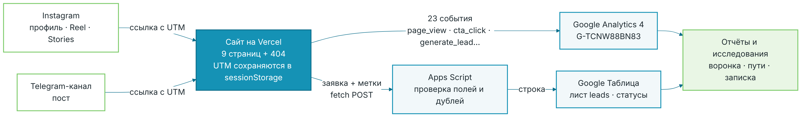
Соцсеть → ссылка с UTM-метками → сайт сохраняет метки → события в GA4 и заявка через Apps Script в Google Таблицу → отчёты и исследования.
ЧИСТЫЙ ЛИСТ3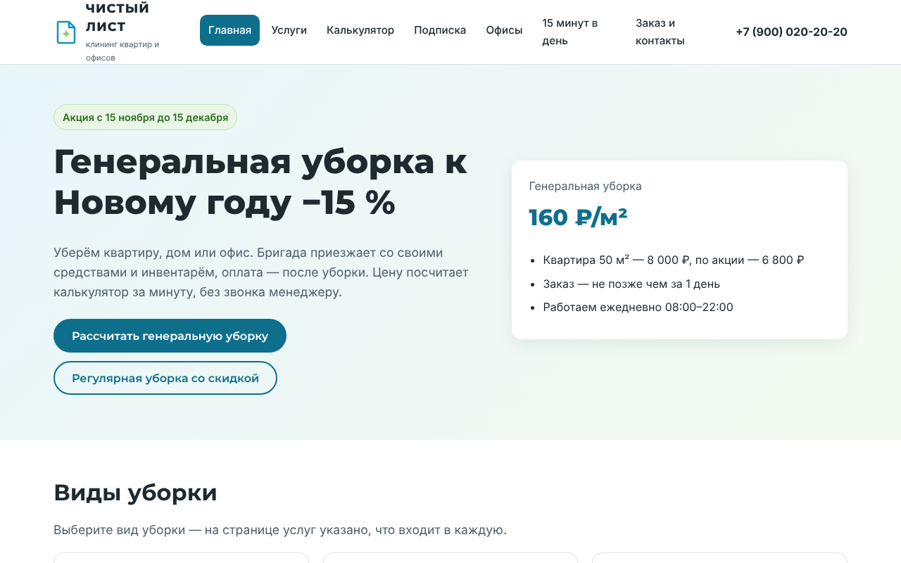
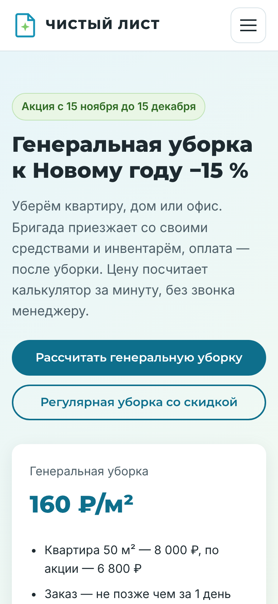
Калькулятор цены с акцией −15 % и подпиской, выбор даты, форма заказа. Создан с помощью нейросети по ТЗ.
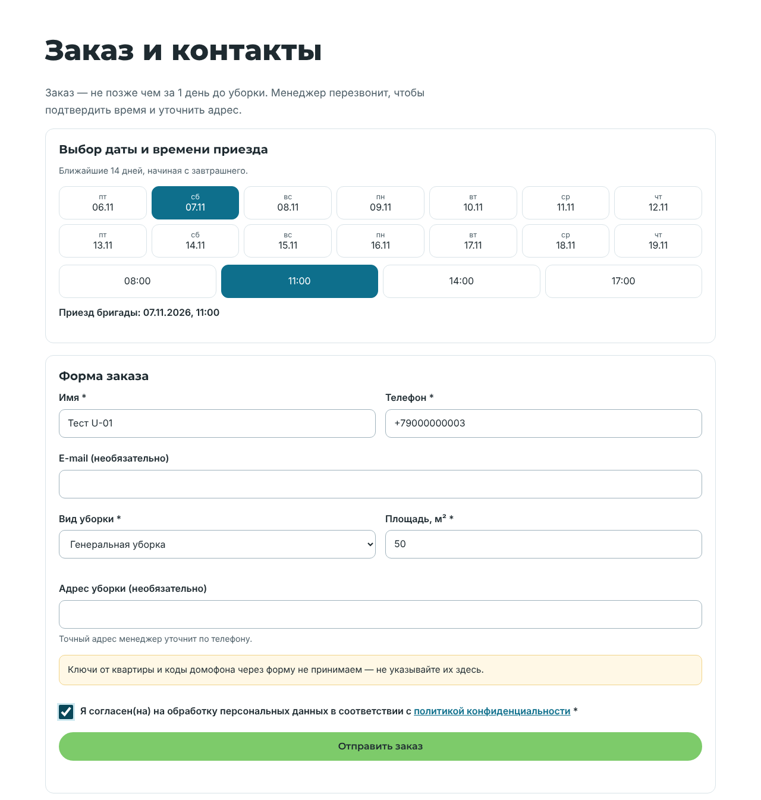
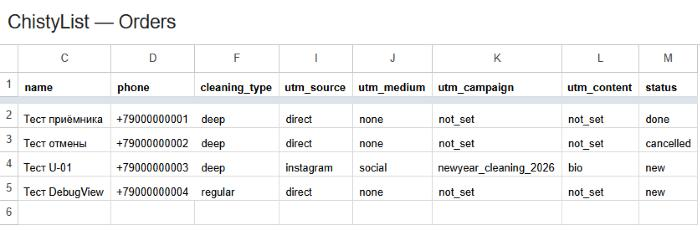
Ссылка …/contacts.html?utm_source=instagram&utm_medium=social&utm_campaign=newyear_cleaning_2026&utm_content=bio → заявка «Тест U-01» пришла с instagram / social / bio. Повторная отправка не создаёт дубль.
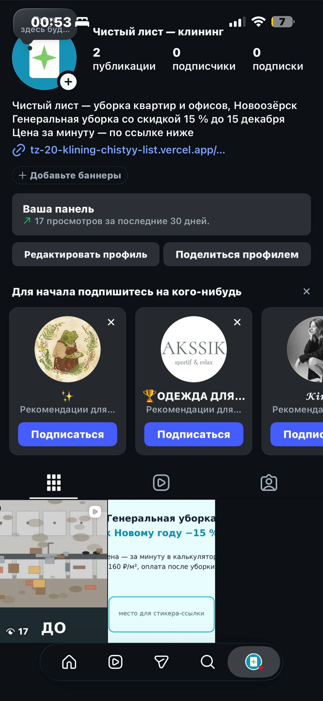
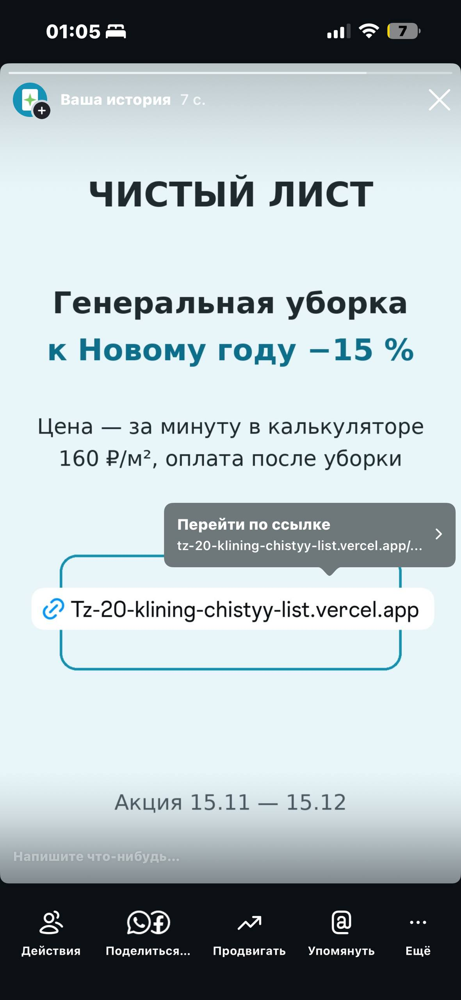
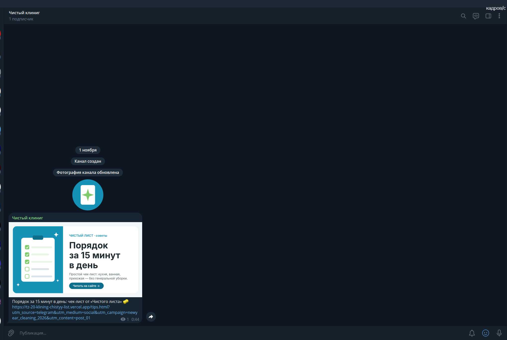
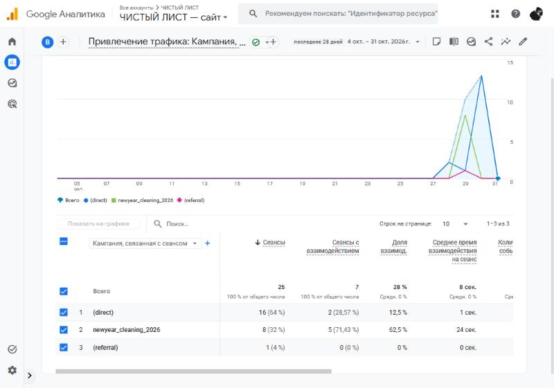
Ключевые: generate_lead, contact_click, messenger_click
Свои события: cta_click, service_view, cleaning_calc, date_select, promo_copy и др. — 14
7 параметров: cleaning_type, button_name, frequency…
Каждое проверено в DebugView.
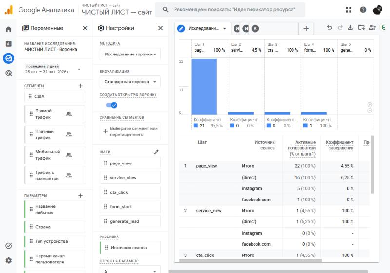
page_view → service_view → cta_click → form_start → generate_lead
22 → 1 пользователь на втором шаге.
Гипотеза: посетители из соцсетей идут сразу в калькулятор и форму, минуя карточки услуг. Проверка — сравнить пути из Instagram и прямых заходов за 2 недели.
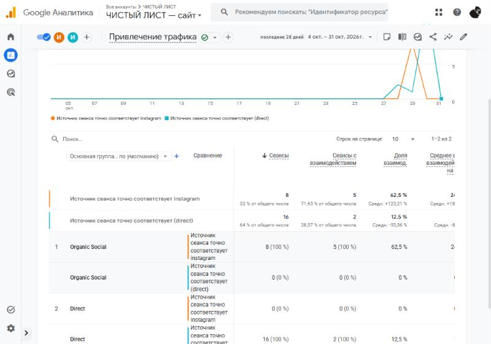
Все 8 ключевых событий — из кампании newyear_cleaning_2026, лучше всех Reel (7).
| Было | Стало |
|---|---|
| цена считается вручную 10–15 минут | калькулятор на сайте считает сразу |
| запросы в личных сообщениях соцсетей | все заявки в одной таблице со статусом |
| источник клиента неизвестен | у каждой заявки есть source, medium, campaign, content |
| 70 000 ₽ «по ощущениям» | сеансы и ключевые события по каждому каналу в GA4 |
Рекомендация: вести ссылку из Reel и профиля сразу на калькулятор и сравнить ключевые события на 100 сеансов до и после. Данные пока тестовые.
ЧИСТЫЙ ЛИСТ10docs/prompts.md.form_submit пришлось отправлять из кода — автоматически GA4 его не видит.Сайт: tz-20-klining-chistyy-list.vercel.app
Репозиторий: github.com/OXIGAME1/tz-20-klining-chistyy-list
Таблица заявок: ChistyList — Orders (доступ по ссылке)
Instagram: instagram.com/nzzerae
GA4: G-TCNW88BN83